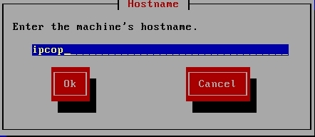
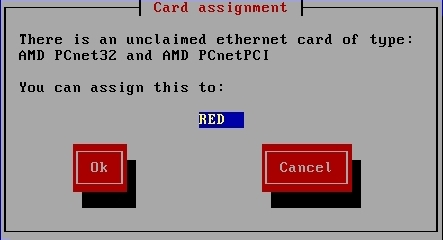
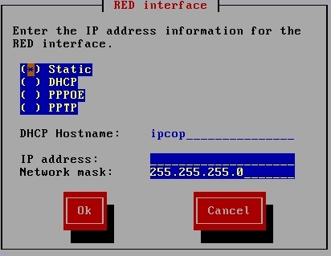
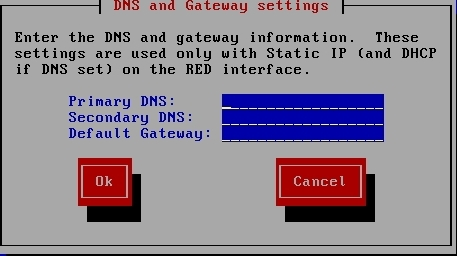
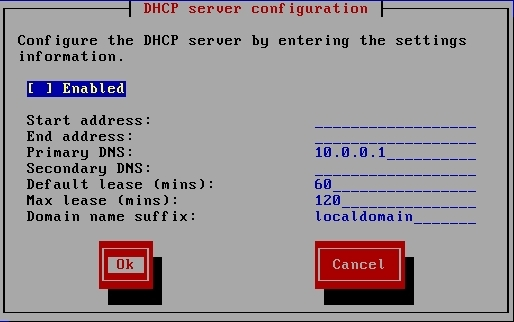

Configure IPCop Without Wireless
- First you will be asked to enter your type of keyboard. Select US and hit
Enter
- Next it will ask you for your time zone, select America/New_York and hit
Enter
- Next it will ask you to enter the machine's hostname. By default it has
the word ipcop as the hostname. We will leave it as ipcop so just hit OK.

- Next it will ask you to enter the domain name. By default the domain name
is "localdomain". Leave the default as it is and hit OK.
- The ISDN configuration menu will pop up. We do not use ISDN so select
Disable ISDN.

- Now the network configuration menu shows up and there is a lot of important
options in this menu. First select Network configuration type.
- We want to use a GREEN(the internal network) and RED(which is the outside network).
Select GREEN + RED and hit OK.
- Now select Drivers and card assignments from the Network configuration
menu.
- Earlier, IPCop automatically detected the NIC for the GREEN interface but
the NIC for the RED interface is still undetermined. It will ask you if you
wish to change the current settings. Hit OK.
- IPCop will find the available driver and give you the option to assign it
to RED. Hit OK.

- You will then get a success screen saying all the cards have been assigned
- At the Network configuration menu select Address settings and then select
the RED interface.
- Because the RED interface is the outside network, the IP address is set by
DHCP so select DHCP from the list of options and hit OK.

- Back at the address settings screen select Done.
- At the Network configuration menu select DNS and Gateway settings
- For Primary DNS enter 158.59.255.10. For the Secondary DNS enter
158.59.255.11. For Default Gateway enter 192.168.208.1 and hit OK.

- Back at the Network configuration screen select Done.
- At DHCP Server Configuration page, mark the Enabled option.
- Enter the starting and ending address for the IPs to be assigned.
For example, start at 192.168.208.100 and end at 192.168.208.200 IP adresses.

- For the Primary DNS enter 158.59.255.10. Secondary DNS is 158.59.255.11. Click Ok.
- Assign the Root, Admin and Backup passwords

- Setup is Complete